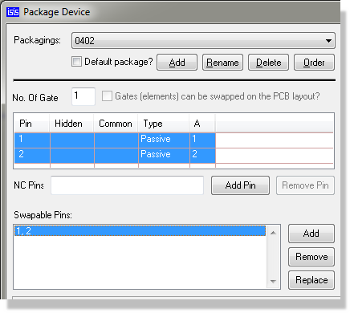
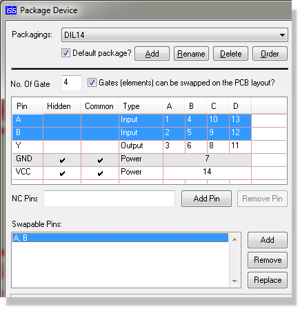
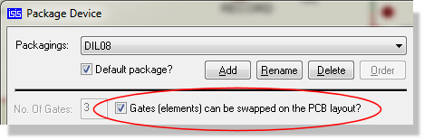

Many types of component have either interchangeable pins - for example the two enable pins on a 74138, or interchangeable elements - for example the six inverters in a 7404. Some components such as the 7400 have both - there are four interchangeable gates each of which has two identical inputs. This phenomenon can be exploited when routing complex PCBs in that it may turn out to be easier to route to an alternate pin or gate to the one specified in the netlist. Clearly, making such a 'spur of the moment' decision will affect the connectivity of the design, and this change needs to be recorded and eventually reflected back on the schematic.
Proteus provides an extremely comprehensive degree of support for this aspect of the EDA problem. Specifically, the following features are provided:
This is achieved through the use of the Visual Packaging Tool, using the 'swappable pins' field at the time of packaging the component to specify the pins that can be swapped on the footprint.

The Packaging Tool showing the swappable pins on a single element part
As with single element devices you should use the Visual Packaging Tool to specify pinswaps on multi-element parts such a the 7400 shown below.,

The Visual Packaging Tool launched on a 7400 showing the pin swap area
To add a pinswap group to a packaging:
You can define multiple swap groups by repeating the above procedure.
It is a happy fact that Proteus can work out the much of the gate-swap information for a multi-element device entirely by itself. For example, in the case of the 7400 , the packaging script contains sufficient information to tell that the swappable element consists of pins A,B and Y and that there are 4 of them.
The only requirement is that we tell Proteus to allow gate swaps using the Gateswap checkbox in the Visual Packaging Tool
Note that the power pins VCC and GND are automatically excluded from the swappable element because they are hidden. They are also required to be on the same nets if a swap is to be made between different packages, since they are marked as being common
Once set up, you can perform gateswaps from the Edit Component dialogue form.
Our final example is of a heterogeneous multi-element part - in this case a DPDT relay consisting of a coil and two pairs of contacts

Specifying gate-swaps on a heterogeneous multi-element device
In this case, both pins of the coil are both common and swappable. Omitting the common would, of course, be disastrous as it would allow swaps of contacts between different relays!
Pin-swaps and gate-swaps are both carried out in exact the same way using the Ratsnest mode on the PCB layout.
To swap two pins or gates:
There is little more to it than that. Note, however, that the layout module will not allow swaps where any of the source or destination pins have tracking attached. In the case of a gate swap, all pins of both gates must be unrouted.
Pin-swaps and Gate-swaps constitute changes to the connectivity of your design. The PCB module uses the pin-swap and gate-swap data specified in the schematic libraries to decide what is, and is not, a valid swap. If there are errors in this data, then Proteus may well suggest illegal swaps. We will not, under any circumstances, be held liable for any costs incurred or losses arising as result of such mishaps, whether the error be in your library parts or ours or in the software itself. We strongly recommend that you check that the swaps you make are legal, and that you prototype your PCB prior to manufacturing large quantities.
In cases where a design has large numbers of swappable gates, it can be very hard to see what the best gate-allocation should be. The number of possible combinations can become literally astronomical even for small numbers of gates. The sample design SHIFT16 contains many more combinations than there are grains of sand in the sahara!
To help you find a near optimum solution, Proteus incorporates and automatic gate-swap optimizer which will perform thousands of trial swaps in such a way as to find what is technically called a 'local minima' for a given board placement. In many cases this is very near optimum, and almost invariably gives some reduction in the total ratsnest length.
To use the Gate-Swap Optimiser:
The algorithm makes repeated passes until such time as it can make no further improvement. Run times can be quite long (5-10 minutes) if there lots of possible swaps.
The Gate-Swap Optimizer relies entirely on the gate-swap data specified in the schematic component libraries to decide what is, and is not, a valid swap. If there are errors in this data, then the swap-optimizer is likely to make erroneous changes to the connectivity of your design. We will not, under any circumstances, be held liable for any costs incurred or losses arising as result of such mishaps, whether the error be in your library parts or ours or in the software itself. We strongly recommend that this command be used only if you are going to prototype your PCB prior to manufacture.